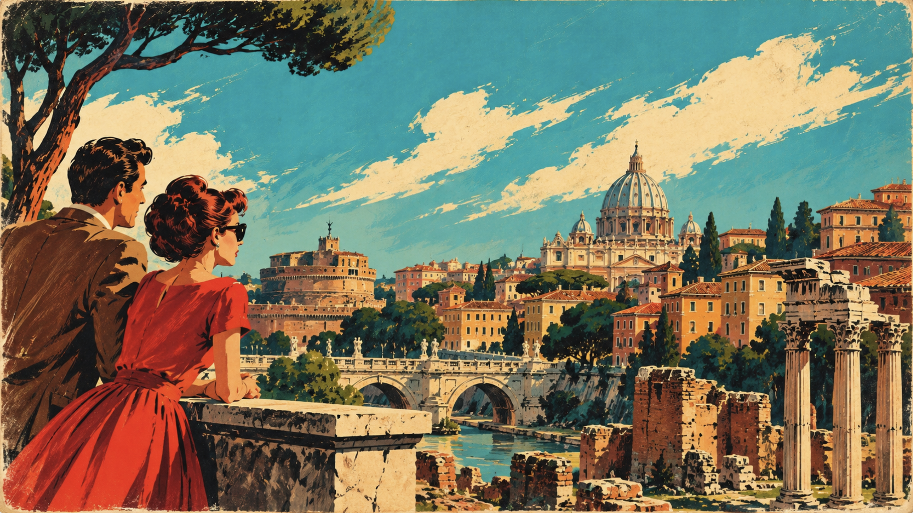
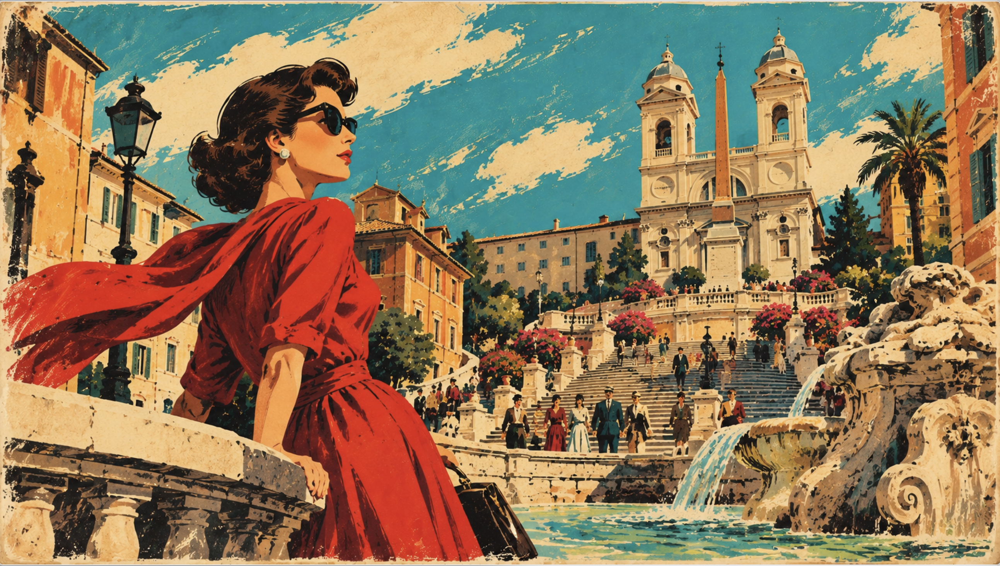

Project moodboard
The board brings together the visual research behind Rome in Two Takes. Open the project board on Pinterest.
We began by looking at illustrated Italian cinema posters. We used their large lettering, dramatic compositions and strong blocks of colour to develop a visual identity for the 1960s theme.
The board brings together the visual research behind Rome in Two Takes. Open the project board on Pinterest.
The Estorick Collection’s exhibition places film posters within the history of Italian cinema. The National Museum of Cinema’s collection provides further examples of posters and publicity materials.
The theme takes the illustrated film poster as its main reference. Its lettering, artwork and credits gave us a model for organising the interface.
A prominent title establishes what the visitor is looking at. Secondary details sit at a smaller scale, following the hierarchy of title, illustration and credits on a film poster.
A warm paper ground and dark outlines connect the design to print. Strong reds, yellows and turquoise give headings and controls enough definition to stand out from that ground.
The opening composition introduces the project as if it were a film on display.
The homepage title leans slightly and uses a hard, offset shadow. The angle breaks the strict alignment of the page and becomes a motif that reappears in the year selector.
Small credit lines above and below the title frame the opening composition. The title carries the emphasis, while the surrounding text identifies the project and leads into the two itineraries.
Three typefaces establish distinct roles across the interface.
A dense display face for the main headings, poster titles and prominent actions. Its weight keeps the title visible against the coloured cartouche.
A condensed sans serif for navigation, labels and supporting interface text. It makes compact controls easier to scan.
A high-contrast serif used for selected reading passages, including the synopsis on the reverse of a poster. It gives editorial text a different rhythm from the interface labels.
Paper and ink provide the base. Accent colours mark headings, routes and interactive states.
#F0E1C3 · The warm ground behind the interface.
#33251E · Body text and outlines.
#C83C2E · Title blocks and emphatic borders.
#F4D44E · Headline lettering and selected controls.
#1599A3 · Secondary accents and route cues.
#D6A45A · Muted accents and offset details.
Leaflet displays the basemap and layers the project’s stops and routes above it.
The light street map gives the routes and markers room to stand out. The street network provides geographic context while the stronger route colours establish the reading order.
Historical, Women and All filter what the map and list display. The buttons use the poster palette to indicate the current selection, while the map retains the same street context.
The route colours are repeated in the markers so that a stop can be related back to its itinerary.
Red identifies Historical Journey stops, turquoise identifies Women & Urban Space stops, and a split marker identifies a location shared by both. The pale ring and centre keep the marker visible over the street map.
The historical route uses red and the Women & Urban Space route uses turquoise. Both routes use solid strokes. Colour and weight make the routes stand out from the street network.
Below the map, the location list carries the same information into a reading layout.
A tilted number marks each stop and sits halfway up its card. The extra space between the number and the card gives the route sequence its own column. Inside the double frame, the location title comes first, followed by the film, description and link.
The complete catalogue uses two equal columns on wider screens, with the final card centred when the count is odd. At narrow widths it becomes a single column. Equal heights on desktop keep cards aligned when the number of links differs.
The two narrative cards use an illustrated poster layout. The image sets the scene, the title identifies the route and the supporting details prepare the visitor to open it.

The historical itinerary connects film scenes to changes in the city. Its illustration and poster-style credits introduce that reading of Rome.

The second itinerary uses the same poster structure for a different reading of the city. Matching card layouts give the two routes equal prominence.
The scene viewer places images and scene navigation beside the narrative panel. On smaller screens the panels can be read in sequence.
The 1960s theme uses generated illustrations for its graphic identity and a separate treatment for the film material.
We generated the illustrations for this theme with AI. We supplied a detailed description of the visual direction and provided real film posters as image references. The references guided the composition, typography and colour treatment of the new illustrations.

The film poster uses a CSS treatment that increases saturation and contrast, adds a small amount of sepia and slightly raises brightness. This gives the homepage gallery a common colour treatment.
The reverse groups the film title, year, director and synopsis inside a double frame. That frame also informed the location and team cards elsewhere in the theme.
The scene photographs in the itinerary viewer are displayed without the homepage poster filter, so the film frames retain their own visual characteristics.
The scene viewer separates narrative reading, technical information and the QR view.
The view controls give each kind of content its own place. Metadata is grouped into labelled fields so the reader can find a detail without searching through the narrative.
Technical records open in a framed modal. The cream paper, red border and offset shadow carry the poster design into this secondary view.
The documentation records how visual references became interface decisions.
Identify recurring traits in real posters, including dominant lettering, illustrated compositions, credit lines and high-contrast colour blocks.
Apply those traits to the homepage title, the narrative cards, the double frames and the diagonal year dividers. Use the visual brief and poster references when generating the theme illustrations.
Repeat the frames, palette and type hierarchy in the map, scene viewer and supporting pages so that the theme remains recognisable across different tasks.
The interface uses colour changes, spacing and contrast to make actions visible.
Primary buttons use the red-and-yellow poster palette. Neutral buttons on the map and GitHub cards begin on light paper and gain colour when the user interacts with them.
Previous and next controls follow the direction of travel through a page sequence. Hover and keyboard focus give the user feedback on the target before activation.
Transitions are concentrated on interactive elements, while the reading order remains consistent across screen widths.
The film posters turn to reveal information on their reverse. Smaller transitions signal changes in colour and emphasis on navigation links and buttons.
The year selector can scroll horizontally. Grids and side-by-side panels stack as space decreases, and the numbered map stops use a more compact layout.